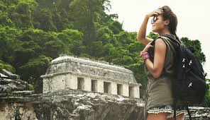

* TURISMO SOCIAL*
El turismo social es una forma de turismo que se enfoca en el bienestar y desarrollo de las comunidades locales en los destinos turisticos se trata de una modalidad de viaje que promueve el intercambio cultural, el respeto
por las tradiciones locales y la participacion activa de los turistas en la vida cotidiana de las comunidades visitadas"las conexiones y los fenomenos relacionados con la participacion de las personas en los paises de destino, asi
como de los turistas, de las capas desfavorecidas de la sociedad o de quienes no pueden participar en el turismo, vacaciones y sus ventajas por cualquier motivo"Se refiere a una forma de turismo que busca proporcionar oportunidades
el turismo social comprende todos aquellos medios e instrumentos, a traves de los cuales se otorgan facilidades para que las personas de recursos limitados viajen con fines recreativos, en condiciones adecuadas de economia,
seguridad y comodidad.”
 |
 |
*OBJETIVO DE TURISMO SOCIAL
- Apoyar a comunidades locales.
- Descubrir y conocer nuevos destinos
- Aprender sobre nuevas culturas
- Ofrecer beneficios economicos a los países anfitriones
- Brindar viajes accesibles para todos
Los programas de turismo social estan diseñados para poder garantizar que todas las personas tengan acceso a unas vacaciones, independientemente de su situacion economica o social.
*VENTAJAS DE TURISMO SOCIAL*
- Es "un moldeador de la sociedad" ya quelos viajes proporcionan experiencias unicas para el enriquecimiento personal, a traves del descubrimiento de nuevos lugares, culturas y civilizaciones, y actividades que permitan conocer personas a traves de brechas generacionales.
- Es un promotor del crecimiento economico, el turismo para todos es una clave de fortaleza economica que genera un flujo continuo de personas e inversiones, lo que contribuye al desarrollo regional y nacional de cualquier pais.
- Participa en el desarrollo regional y local "conciliando el desarrollo turistico, la proteccion del ambiente y el respeto a la identidad de las comunidades locales".
- Es un aliado clave en los programas de desarrollo global, al estar controlado y respetar el entorno natural y cultural y las comunidades locales, constituye una de las esperanzas economicas, sociales y culturales de muchos paises en desarrollo.
gomez gomez cleydi y@reni
6105 P.T.B informatica
02-05-2024